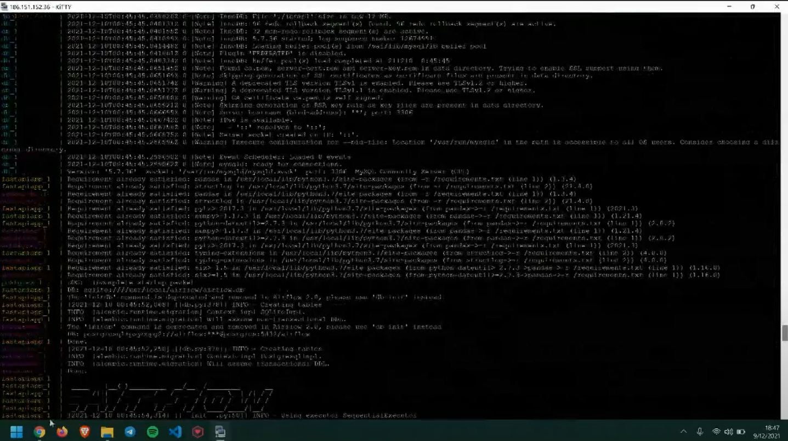
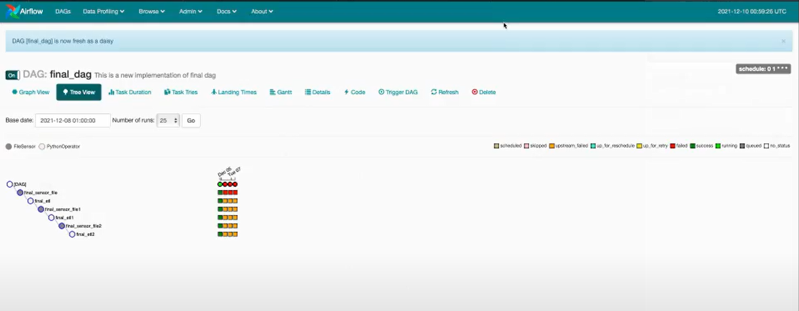

Instalación
El código para instalar el proyecto se encuentra en el repositorio, organizado de la siguiente forma:
- • Dashboard: carpeta que contiene todos los archivos para la ejecución del dashboard mediante Streamlit.
- • Airflow: contiene los scripts para la creación y puesta en marcha de los flujos de ingesta, contenedores y puesta en marcha del servicio mediante FastAPI.
Ejecución
Para ejecutar el proyecto (una vez realizado el pull del código) se deben ejecutar los siguientes comandos de terminal:
- 2. docker build . -t fastapi_app
- 3. docker-compose build
- 4. docker-compose up

Estos comandos permiten iniciar el flujo de ingesta de datos en Airflow:

Almacenamiento de Datos
Finalmente, el proceso lleva los datos insumo a una base de datos MySQL en tres tablas stage y una tabla final lista para ser consumida por el dashboard:
- - CASES_CONFIRMEDCV19: Información de los datos acumulados de casos confirmados por fecha, país y coordenadas.
- - CASES_DEATHCV19: Información de los datos acumulados de muertes por fecha, país y coordenadas.
- - CASES_RECOVEREDCV19: Información de los datos acumulados de casos de recuperaciones por fecha, país y coordenadas.
- - CASES_CV19: Información de todos los tipos de casos por fecha, país y coordenadas.
Cada una de estas tablas está asociada a un endpoint en fastAPI que permite consumir los datos hacia el tablero.
Dashboard
El dashboard consiste en 4 vistas:
- 1. Inicio: contiene una breve descripción sobre el COVID-19.
- 2. Análisis de la distribución geográfica: consiste en un mapa en el que se representa visualmente la distribución de los diferentes tipos de casos. El usuario puede seleccionar el tipo de filtro para la fecha (slider de rangos o calendario) y un seleccionar la opción del tipo o estado de caso.
- 3. Estadísticas de incrementos: se muestra la tendencia de los casos por varios países, lo que permite identificar los incrementos o descensos a lo largo del tiempo.
- 4. Estadísticas adicionales: se muestra el comportamiento de los casos agrupados por año y mes, así como la tendencia de la tasa de mortalidad % (calculada como la cantidad de muertes sobre el total de casos confirmados para cada periodo). El usuario puede seleccionar el país que necesita analizar.